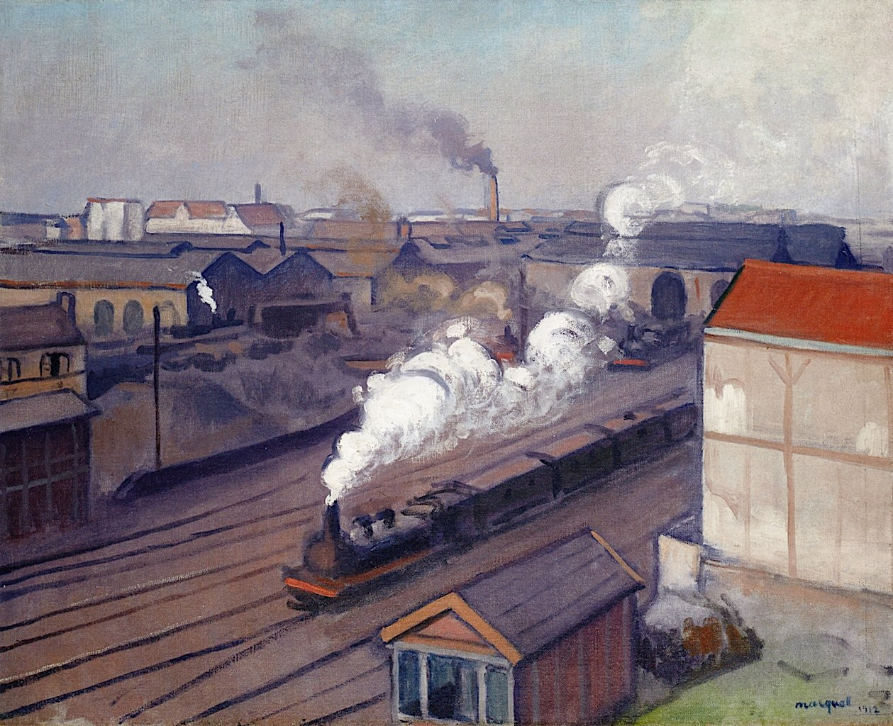
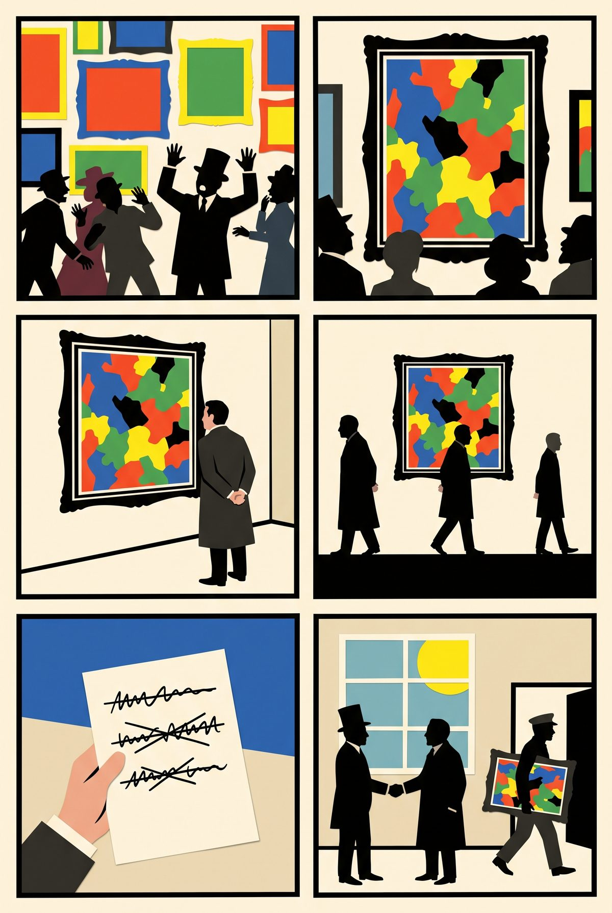
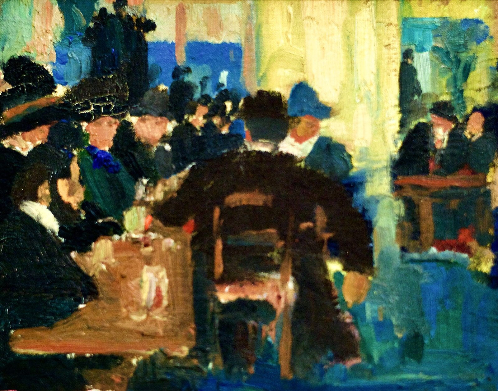

18:20 · three minutes · then 500 m east along boulevard du Montparnasse to stop 4

Albert Marquet, La Gare Montparnasse, 1912. The station stood on this square until the 1960s. Public domain.
Stand on place du 18-Juin-1940, at the foot of rue de Rennes, with the modern station behind you.
▶ Listen · The Swedes and the four hundred francs · 4 min
At the Café de Versailles, which stood at number 3 on this square, Matisse's students met. In 1908 the Swede Isaac Grünewald signed up his friends for the school here. About forty Swedes trained with Matisse; more than half the school was Scandinavian. Two of them, Grünewald and Sigrid Hjertén, met there and married; critics called her "Mrs Grünewald", so she signed every canvas "Hjertén". Not one Finn is recorded.
Up rue de Rennes, 800 m north, lived the Americans who made Matisse. In 1905 Leo Stein called Woman with a Hat "the nastiest smear of paint I had ever seen" and bought it: 500 francs asked, 300 refused, not under 450 in writing, 400 accepted. His sister Gertrude sat ninety times for Picasso; told the portrait did not look like her, he said: "She will."
Fun fact
Twenty per cent off the painting that started modern art. The record for a Matisse at auction today: $80.75 million.
Quiz · Five hundred francs asked. What did the buyer pay?
Four hundred.
The story in six panels

1October 1905. The Salon d'Automne. One room is full of violent colour. “Wild beasts!”
2Matisse's Woman with a Hat: colours nobody has seen on a face.
3Leo Stein, an American collector, stops in front of it. “The nastiest smear of paint I ever saw.”
4He comes back. And back. He wants it.
5Matisse asks 500 francs. Refuses 300. Writes: not under 450.
6Leo pays 400. Twenty per cent off the painting that started modern art.
Drawn in paper-cut style with Gemini from our script; no real person is depicted.
More to look at
The studio at 27 rue de Fleurus, c. 1906; Woman with a Hat hangs top centre. Public domain.

Amadeo de Souza-Cardoso, Brasserie Dumesnil, c. 1908–10, a café by this square. MNAC-Chiado, Lisbon. Artwork public domain; photo Pedro Ribeiro Simões, CC BY 2.0.